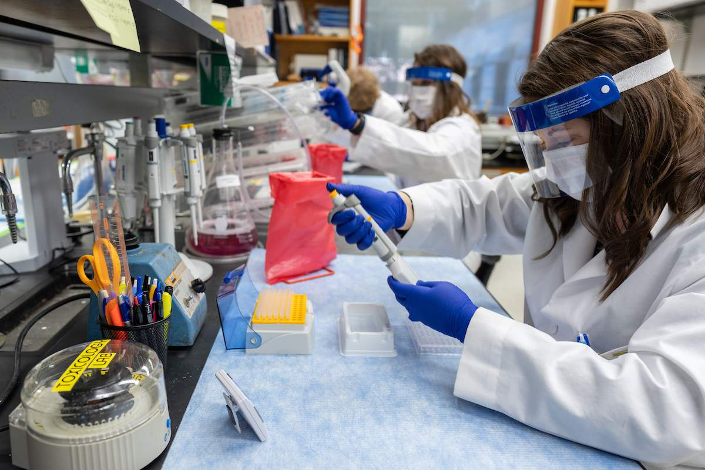

Safety concerns of COVID-19 vaccine
Carrie Shim. 8/9/2020

UF researchers work on developing a vaccine for COVID-19 using techniques involving gene therapy. (University of Florida)
UF researchers work on developing a vaccine for COVID-19 using techniques involving gene therapy. (University of Florida)
As of Aug. 2020, a vaccine for COVID-19 (called the SARS-CoV-2 in labs) still has not been discovered, despite the myriad of scientists working around the clock for a cure. However, two drugs have been shown to have healing effects on those sick with COVID-19. The first of those drugs is called the antiviral remdesivir and it shortens the recovery times for those with COVID-19. The second of those drugs is called dexamethasone, which alleviates breathing problems in those diagnosed with COVID-19. Though these beams of hope offer small solutions to treat COVID-19 to be more bearable in the current situation, the race for the real vaccine for treating COVID-19 is ongoing. It is predicted that the vaccine for COVID-19 may be found towards the end of this hectic year. However, many experts are worried that the rush to find the vaccine may compromise safety in return.
Traditionally, vaccines are created from weakened fragments of viruses, but this method can be very heavily time-consuming if done to create a large amount of vaccines. A shortcut to the vaccine is done by studying the genetic makeup of the virus. A spike protein is a part of a virus that is studded across the exterior of the virus and allows for the virus to attach to and enter human cells. The spike protein is easily recognized by antibodies since it is on the exterior of the virus. Scientists copied the SARS-CoV-2 version of instructions for making the spike protein into RNA or DNA to generate several different types of vaccines. When these vaccines are inserted into a body, the immune system creates antibodies that recognize and blocks the virus from attaching to cells. This helps prevent illness, and this vaccine variant has been involved in plans to start trials on people.
Although some of these trials have been ongoing, researchers have more recently been speculating on the importance of safety with these trials of new vaccines. Specifically, researchers have said they will be keeping an eye out on any possibility that the antibodies created by the vaccines might increase the rate of infection, which may occur when antibodies don't completely neutralize the virus. This can lead to the virus more easily entering cells. The antibody production becoming the sole indicator of a vaccine’s effectiveness is another arising safety concern. It isn’t clear yet how well antibodies protect against reinfection with COVID-19 and how long the immunity would last.
As of now, companies have been measuring success of vaccines with antibodies. For instance, a company of the name INOVIO announced that on June 30, 94 percent of participants in a trial created antibodies to combat COVID-19.
According to Science News, another safety concern is with the Chinese government approving trials of a vaccine generated by CanSino Biologics Inc. to be done on the Chinese military, which ultimately dehumanizes the soldiers into mere guinea pigs for an uncertain vaccine.
Another possible safety concern in the case that a vaccine is found is that there is no guarantee that everyone will be willing to line up for a vaccination. Recent polls showed that about a fourth of Americans would not get vaccinated if the COVID-19 vaccine was available. Amidst the eagerness to discover the vaccine for COVID-19 as soon as possible, these different studies highlight the importance of prioritizing safety over speed. Knowing that billions of people are putting their trust into scientists, they must keep in mind these safety concerns.
Cover Photo: Anti-vax protestors show possible trouble for when the COVID-19 vaccine is released. (Alex Milan Tracy / AP Images)

Carrie is a rising senior at Canyon High School who has a passion for all things STEM-related. She is enthusiastic about writing blogs and wishes to help others discover a hidden love for STEM-related topics as well. With InterSTEM, Carrie hopes to fulfill her interests in STEM and guide others.